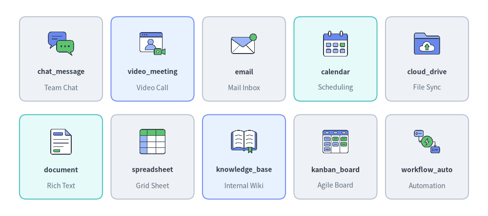
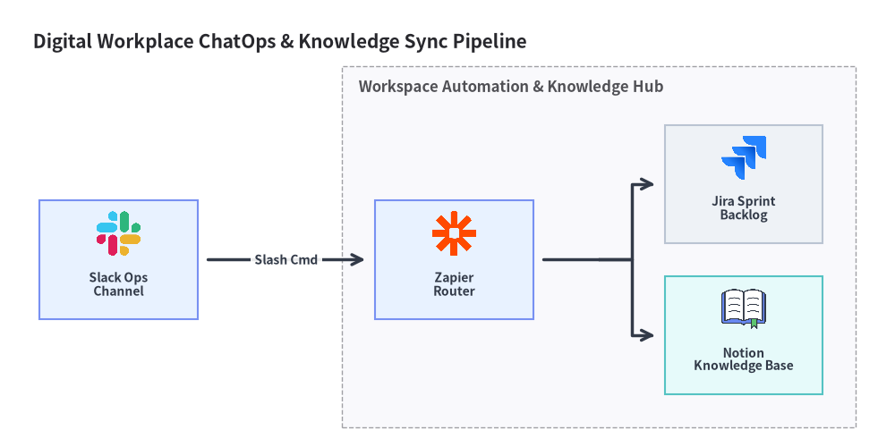

ワークスペース・コラボレーションアイコン (workspace & original_workspace)
Drawlib は、drawlib.icons.workspace（WorkspaceIcon）に 40 種の公式プロダクティビティ・コラボレーション・ナレッジベースブランドアイコンを、drawlib.icons.original_workspace（OriginalWorkspaceIcon）に 57 種のフラット 2D パステルアイコン（全 40 種のブランドツイン＋17 種のベンダー中立なコラボレーション・ドキュメントコンセプトアイコン）を提供しています。ティア間の使い分けについてはアイコン概要を、エンタープライズワークフロー構成図についてはアーキテクチャ図を参照してください。
Source Code
from drawlib.canvas import save, setup
from drawlib.icons import original_workspace, workspace
from drawlib.shapes import rectangle
from drawlib.styles import Styles
from drawlib.text import text
setup(width=140, height=68)
columns = [
(
25.0,
"1. Official Brands",
"workspace (40 icons)",
Styles.Neutral,
[
("slack", workspace.slack),
("notion", workspace.notion),
("jira", workspace.jira),
("google_drive", workspace.google_drive),
],
),
(
70.0,
"2. 2D Pastel Brands",
"original_workspace (40 twins)",
Styles.PrimaryNeutral,
[
("slack", original_workspace.slack),
("notion", original_workspace.notion),
("jira", original_workspace.jira),
("google_drive", original_workspace.google_drive),
],
),
(
115.0,
"3. 2D Pastel Concepts",
"original_workspace (+17 concepts)",
Styles.SecondaryNeutral,
[
("chat_msg", original_workspace.chat_message),
("wiki_kb", original_workspace.knowledge_base),
("kanban", original_workspace.kanban_board),
("cloud_drive", original_workspace.cloud_drive),
],
),
]
for cx, title, subtitle, card_style, items in columns:
rectangle((cx, 34.0), width=40.0, height=58.0, style=card_style.patch(shape_r=2.5))
text((cx, 57.5), title, style=Styles.DarkBold.patch(text_size=11.0))
text((cx, 52.0), subtitle, style=Styles.Muted.patch(text_size=10.0))
offsets = [(-9.5, 37.5), (9.5, 37.5), (-9.5, 16.5), (9.5, 16.5)]
sub_style = Styles.White.patch(shape_r=1.5, line_width=0.6)
for (dx, iy), (lbl, fn) in zip(offsets, items, strict=True):
ix = cx + dx
rectangle((ix, iy), width=17.2, height=18.5, style=sub_style)
fn((ix, iy + 2.5), width=8.0, style=Styles.Primary)
text((ix, iy - 5.5), lbl, style=Styles.DarkBold.patch(text_size=10.0))
save()
1. API シグネチャとツインモジュール構成
workspace と original_workspace は、デジタルワークプレイス構成、ChatOps 自動化、ナレッジマネジメント、BI レポーティングパイプライン向けのツインアイコンペアを構成しています。
| モジュール | ダイアグラム Enum | 正規アイコン数 | アセットアーカイブ | 主な視覚的用途 |
|---|---|---|---|---|
drawlib.icons.workspace |
WorkspaceIcon |
40 | icon_workspace |
Google Workspace、Microsoft 365、Slack、Notion、Jira、Figma、Tableau などの公式プロダクトロゴ。 |
drawlib.icons.original_workspace |
OriginalWorkspaceIcon |
57（ブランドツイン 40 種 + コンセプト 17 種） |
icon_original_workspace |
全 40 ワークスペースブランドの統一されたフラット 2D パステル版に加え、17 種のベンダー中立なコラボレーションコンセプト（chat_message、knowledge_base、kanban_board、workflow_automation など）を収録。 |
すべてのアイコン関数は 1:1 の正方形アスペクト比で中心座標 xy=(cx, cy) を基準に配置され、Style 属性（alpha、angle、image_tint_color、image_border_*）を受け取ります。
from drawlib.diagrams.architecture import Node, OriginalWorkspaceIcon, WorkspaceIcon
from drawlib.icons import original_workspace, workspace
from drawlib.styles import Styles
# 1. Direct canvas rendering (center-anchored at (cx, cy))
workspace.slack((30, 25), width=9.0, style=Styles.Primary)
original_workspace.slack((60, 25), width=9.0, style=Styles.Primary)
original_workspace.knowledge_base((90, 25), width=9.0, style=Styles.Primary)
# 2. High-level ArchitectureDiagram nodes via Enum tokens
chat_node = Node("Slack Bot", width=26, height=18, icon=WorkspaceIcon.SLACK, icon_size=7.5)
wiki_node = Node("Team Wiki", width=26, height=18, icon=OriginalWorkspaceIcon.KNOWLEDGE_BASE, icon_size=7.5)
2. 公式・パステルブランドアイコン一覧とリファレンス (workspace & original_workspace)
以下に示す 40 種の正規ブランド名は、drawlib.icons.workspace.<name>（WorkspaceIcon.<NAME>）と drawlib.icons.original_workspace.<name>（OriginalWorkspaceIcon.<NAME>）の両方で同一名称として利用できます。
Source Code
from drawlib.canvas import save, setup
from drawlib.icons import workspace
from drawlib.shapes import rectangle
from drawlib.styles import Styles
from drawlib.text import text
setup(width=144, height=64)
row1 = [
("google_workspace", "Google Suite", workspace.google_workspace, Styles.Neutral),
("microsoft_365", "M365 Suite", workspace.microsoft_365, Styles.PrimaryNeutral),
("slack", "Team Chat", workspace.slack, Styles.Neutral),
("microsoft_teams", "Unified Comm", workspace.microsoft_teams, Styles.SecondaryNeutral),
("zoom", "Video Meet", workspace.zoom, Styles.Neutral),
]
row2 = [
("notion", "Docs & Wiki", workspace.notion, Styles.SecondaryNeutral),
("jira", "Issue Tracker", workspace.jira, Styles.Neutral),
("confluence", "Enterprise KB", workspace.confluence, Styles.PrimaryNeutral),
("figma", "UI Design", workspace.figma, Styles.Neutral),
("zapier", "iPaaS Flow", workspace.zapier, Styles.Neutral),
]
for row_idx, items in enumerate([row1, row2]):
cy = 46.5 if row_idx == 0 else 17.5
for col_idx, (name, cat, icon_fn, card_st) in enumerate(items):
cx = 18.0 + col_idx * 27.0
rectangle((cx, cy), width=24.5, height=25.0, style=card_st.patch(shape_r=2))
icon_fn((cx, cy + 4.5), width=8.5, style=Styles.Primary)
text((cx, cy - 3.8), name, style=Styles.DarkBold.patch(text_size=10.0))
text((cx, cy - 8.5), cat, style=Styles.Muted.patch(text_size=10.0))
save()
ブランドアイコン全 40 種一覧 (workspace & original_workspace)
| カテゴリ | 数 | 正規関数名 (workspace.* & original_workspace.*) |
Enum メンバー (WorkspaceIcon.* & OriginalWorkspaceIcon.*) |
|---|---|---|---|
| Google Workspace スイート | 10 | gmail, google_calendar, google_chat, google_docs, google_drive, google_forms, google_meet, google_sheets, google_slides, google_workspace |
GMAIL, GOOGLE_CALENDAR, GOOGLE_CHAT, GOOGLE_DOCS, GOOGLE_DRIVE, GOOGLE_FORMS, GOOGLE_MEET, GOOGLE_SHEETS, GOOGLE_SLIDES, GOOGLE_WORKSPACE |
| Microsoft 365 プロダクティビティスイート | 8 | excel, microsoft_365, microsoft_teams, onedrive, outlook, powerpoint, sharepoint, word |
EXCEL, MICROSOFT_365, MICROSOFT_TEAMS, ONEDRIVE, OUTLOOK, POWERPOINT, SHAREPOINT, WORD |
| チームメッセージング・Web 会議 | 4 | discord, slack, webex, zoom |
DISCORD, SLACK, WEBEX, ZOOM |
| プロジェクト管理・課題トラッカー・Wiki | 7 | asana, confluence, jira, linear, monday, notion, trello |
ASANA, CONFLUENCE, JIRA, LINEAR, MONDAY, NOTION, TRELLO |
| クラウドストレージ・PDF・共同デザイン | 6 | adobe_acrobat, box, canva, dropbox, figma, miro |
ADOBE_ACROBAT, BOX, CANVA, DROPBOX, FIGMA, MIRO |
| ノーコード DB・BI・ワークフロー自動化 | 5 | airtable, power_automate, power_bi, tableau, zapier |
AIRTABLE, POWER_AUTOMATE, POWER_BI, TABLEAU, ZAPIER |
3. ベンダー中立コンセプトアイコン一覧とリファレンス (original_workspace)
上記の 40 種のブランドツインに加え、drawlib.icons.original_workspace（OriginalWorkspaceIcon）には 17 種のベンダー中立なコラボレーション・業務効率化コンセプトアイコンが収録されており、汎用的なドキュメント処理パイプライン、社内ナレッジベース、ChatOps ワークフローに活用できます。

Source Code
from drawlib.canvas import save, setup
from drawlib.icons import original_workspace
from drawlib.shapes import rectangle
from drawlib.styles import Styles
from drawlib.text import text
setup(width=144, height=64)
row1 = [
("chat_message", "Team Chat", original_workspace.chat_message, Styles.Neutral),
("video_meeting", "Video Call", original_workspace.video_meeting, Styles.PrimaryNeutral),
("email", "Mail Inbox", original_workspace.email, Styles.Neutral),
("calendar", "Scheduling", original_workspace.calendar, Styles.SecondaryNeutral),
("cloud_drive", "File Sync", original_workspace.cloud_drive, Styles.Neutral),
]
row2 = [
("document", "Rich Text", original_workspace.document, Styles.SecondaryNeutral),
("spreadsheet", "Grid Sheet", original_workspace.spreadsheet, Styles.Neutral),
("knowledge_base", "Internal Wiki", original_workspace.knowledge_base, Styles.PrimaryNeutral),
("kanban_board", "Agile Board", original_workspace.kanban_board, Styles.Neutral),
("workflow_auto", "Automation", original_workspace.workflow_automation, Styles.Neutral),
]
for row_idx, items in enumerate([row1, row2]):
cy = 46.5 if row_idx == 0 else 17.5
for col_idx, (name, cat, icon_fn, card_st) in enumerate(items):
cx = 18.0 + col_idx * 27.0
rectangle((cx, cy), width=24.5, height=25.0, style=card_st.patch(shape_r=2))
icon_fn((cx, cy + 4.5), width=8.5, style=Styles.Primary)
text((cx, cy - 3.8), name, style=Styles.DarkBold.patch(text_size=10.0))
text((cx, cy - 8.5), cat, style=Styles.Muted.patch(text_size=10.0))
save()
ベンダー中立コンセプトアイコン全 17 種一覧 (original_workspace)
正規関数名 (original_workspace.*) |
Enum メンバー (OriginalWorkspaceIcon.*) |
コラボレーション区分 | 主なアーキテクチャ上の役割 |
|---|---|---|---|
announcement |
ANNOUNCEMENT |
コミュニケーション | 全社アナウンス配信、リリース通知、障害ステータスバナー |
calendar |
CALENDAR |
スケジュール管理 | チーム共有カレンダー、オンコール当番ローテーション、予約サービス |
chat_message |
CHAT_MESSAGE |
リアルタイムチャット | インスタントメッセージチャネル、ChatOps Webhook、Bot 通知 |
cloud_drive |
CLOUD_DRIVE |
ファイルストレージ | エンタープライズ向けファイル同期・共有（EFSS）リポジトリ |
document |
DOCUMENT |
オフィスドキュメント | 共同編集ドキュメントまたは技術仕様書 |
email |
EMAIL |
コミュニケーション | 法人メール受信トレイ、SMTP リレー宛先、ダイジェスト通知 |
form_survey |
FORM_SURVEY |
データ収集・申請 | ユーザーフィードバックフォーム、受付申請フォーム、アンケートポータル |
kanban_board |
KANBAN_BOARD |
プロジェクト管理 | スプリントバックログ、課題トリアージボード、タスク進捗ワークフロー |
knowledge_base |
KNOWLEDGE_BASE |
ドキュメンテーション | 社内エンジニアリング Wiki、運用手順書ポータル、RAG ドキュメントコーパス |
pdf_document |
PDF_DOCUMENT |
オフィスドキュメント | PDF レポート、署名済み契約書、エクスポート帳票成果物 |
presentation |
PRESENTATION |
オフィスドキュメント | スライドデッキ、経営層向けブリーフィング、アーキテクチャレビュー資料 |
project_plan |
PROJECT_PLAN |
プロジェクト管理 | ロードマップタイムライン、マイルストーン計画、デリバリスケジュール |
spreadsheet |
SPREADSHEET |
オフィスドキュメント | 表計算財務モデル、CSV エクスポート、運用データシート |
video_meeting |
VIDEO_MEETING |
Web 会議 | 多拠点ビデオ会議ブリッジ、ウェビナー、オンライン障害対策ルーム |
voice_call |
VOICE_CALL |
音声通話 | VoIP 音声通話、SIP ソフトフォン、音声会議ブリッジ |
whiteboard |
WHITEBOARD |
ビジュアル協業 | アーキテクチャ設計やふりかえりワークショップ向けのオンラインホワイトボード |
workflow_automation |
WORKFLOW_AUTOMATION |
ノーコード・iPaaS | イベント駆動 Webhook トリガ、ローコードコネクタ、ワークスペース自動化 |
4. 実践的なアーキテクチャ図 (ArchitectureDiagram)
以下の例では、ArchitectureDiagram 内で WorkspaceIcon と OriginalWorkspaceIcon を組み合わせ、ChatOps インシデントトリアージとナレッジベース自動同期パイプラインをモデル化しています。
from drawlib.canvas import clear, save, setup
from drawlib.diagrams.architecture import (
ArchitectureDiagram,
Node,
NodeGroup,
OriginalWorkspaceIcon,
WorkspaceIcon,
)
from drawlib.styles import Styles
clear()
setup(width=136, height=68)
d = ArchitectureDiagram(
node_style=Styles.Primary,
node_text_style=Styles.DarkBold.patch(text_size=10.0),
edge_style=Styles.DarkBold,
edge_text_style=Styles.DarkBold.patch(text_size=10.0),
node_card_style=Styles.Neutral,
title="Digital Workplace ChatOps & Knowledge Sync Pipeline",
)
slack_ch = d.add(
Node(
"Slack Ops\nChannel",
width=24,
height=18,
icon=WorkspaceIcon.SLACK,
icon_size=7.5,
card_style=Styles.PrimaryNeutral,
),
xy=(14.0, 24.5),
)
hub = d.add(
NodeGroup(title="Workspace Automation & Knowledge Hub", padding=5.0),
xy=(48.0, 4.0),
)
zapier_flow = hub.add(
Node(
"Zapier\nRouter",
width=24,
height=18,
icon=WorkspaceIcon.ZAPIER,
icon_size=7.5,
card_style=Styles.PrimaryNeutral,
),
xy=(17.0, 20.5),
)
jira_board = hub.add(
Node(
"Jira Sprint\nBacklog",
width=24,
height=18,
icon=WorkspaceIcon.JIRA,
icon_size=7.5,
),
xy=(61.0, 32.0),
)
notion_kb = hub.add(
Node(
"Notion\nKnowledge Base",
width=24,
height=18,
icon=OriginalWorkspaceIcon.KNOWLEDGE_BASE,
icon_size=7.5,
card_style=Styles.SecondaryNeutral,
),
xy=(61.0, 9.0),
)
d.connect(slack_ch, zapier_flow, label="Slash Cmd", padding=1.5)
zapier_flow.fork([jira_board, notion_kb], at_x=87.0, padding=1.5)
d.draw(xy=(4.0, 4.0))
save()
